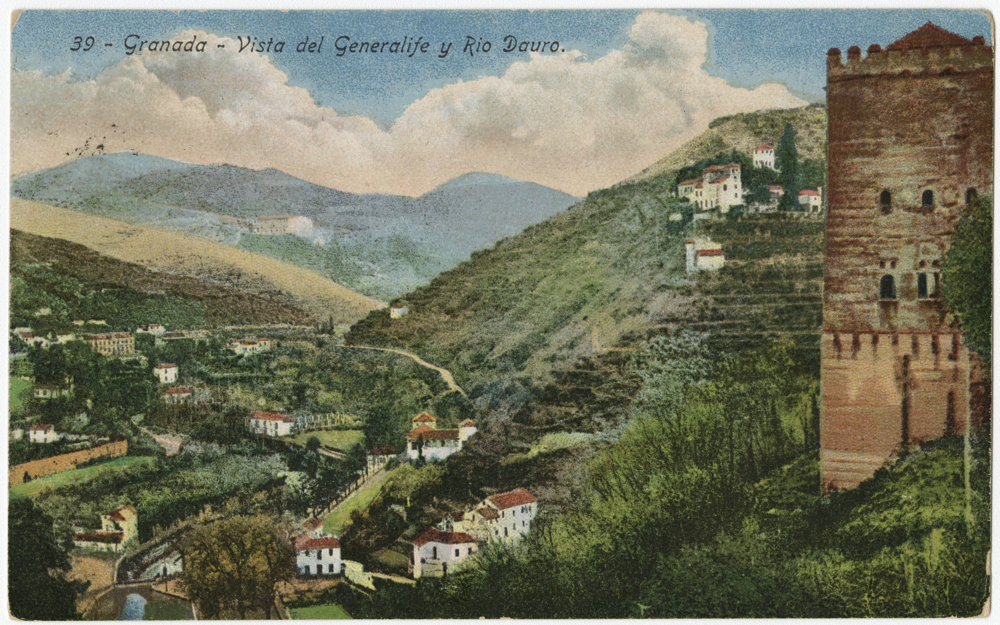
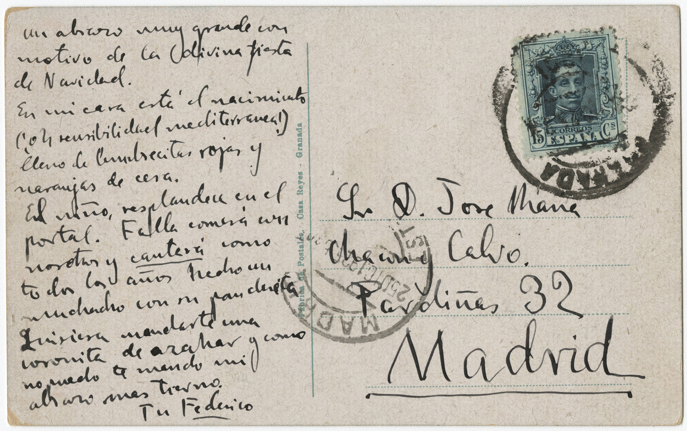

Carta de Federico García Lorca a José María Chacón y Calvo, December 25, 1925
Editada por: Gabriela Díaz
Colección: Federico
García Lorca Papers, Library Digital Collections, University of Miami
ID: chc5324000002Lugar y fecha: Granada (España), 25 de diciembre de 1925
Tamaño:
9cm
14cm
Nota:
En esta postal escrita por Lorca durante las Navidades de 1925, Lorca manda a
Chacón sus mejores deseos, le describe su casa adornada para la época navideña y le
comenta
con quien va a pasar las fiestas, como por ejemplo con Falla.

39 - Granada -
Vista del Generalife y Rio Dauro

Un abrazo muy grande con motivo de la divina fiesta / de Navidad.
En mi casa está el nacimiento (¡oh sensibilidad / mediterránea!) lleno de
lumbrecitas rojas y naranjas de cera.
El niño resplandece en el portal. Falla comerá con / nosotros y cantará como todos
los años hecho un muchacho con / su pandereta.
Quisiera mandarte una coronita de azahar y como no / puedo te mando mi
abrazo más tierno.
Tu: Federico